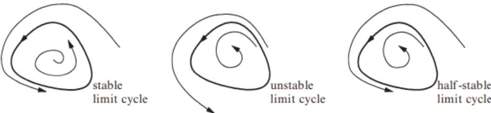

A limit cycle is an isolated closed trajectory. Isolated means that neighboring trajectories are not closed; they spiral either toward or away from the limit cycle
If all neighboring trajectories approach the limit cycle, the limit cycle is stable or attracting. Otherwise, the limit cycle is unstable, or in exceptional cases, half-stable
Stable limit cycles are very important scientifically, they model systems that exhibit self-sustained oscillations. These systems oscillate even in the absence of external periodic forcing
Examples: the beating of a heart; the periodic firing of a pacemaker neuron; daily rhythms in human body temperature and hormone secretion; chemical reactions that oscillate spontaneously; dangerous self-excited vibrations in bridges and airplane wings
A closed trajectory in phase space which corresponds physically to an oscillation
1Strogatz, S.H. (2015). Nonlinear Dynamics and Chaos: With Applications to Physics, Biology, Chemistry, and Engineering (2nd ed.). CRC Press.